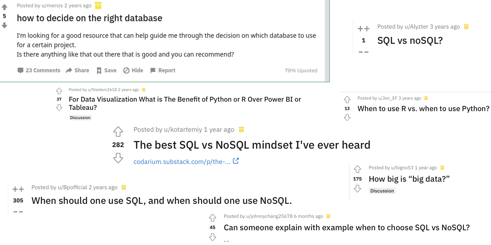
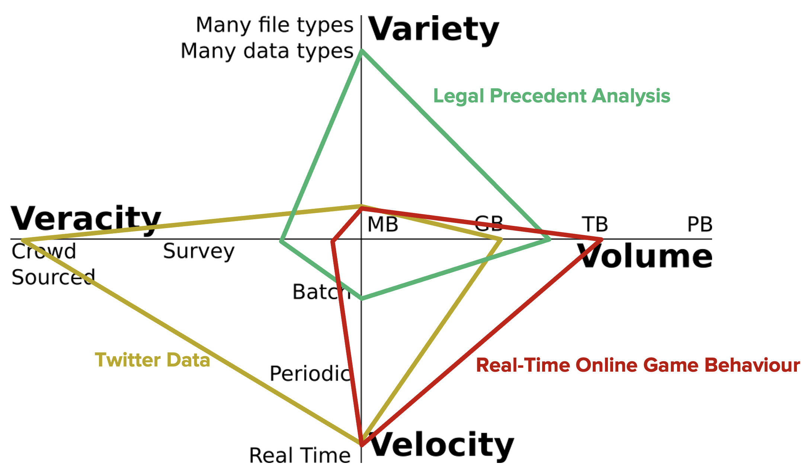
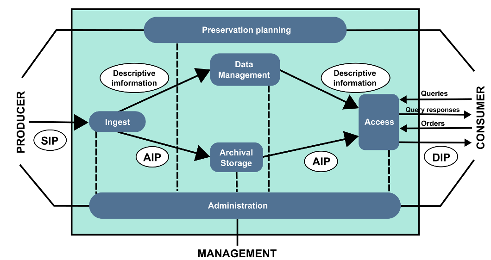

2. Lecture 1: Data Management in a Big Data Environment¶
Gittu George, January 4 2022
2.1. Learning objectives¶
You will understand how database management systems can be optimized for big data applications
You will understand how the axes of big data (the 4Vs) apply to databases
You will understand how the questions you ask affect the tools needed for data analysis
2.2. Let’s hear a story on ‘it Depends.’¶
You probably might have come across many questions like this in Reddit or StackOverflow.
You probably want to check out these questions and answers,1,2,3,4,5,6,7 to see what they are talking about. Reading these questions and answers is interesting, but before thinking about all these technologies, you have to first think about the problem in your hand. If you have a clear understanding of the business problem in hand and list down all the features of your problem, you can list out the pros and cons of using one technology over another.
So which technology should I use?
It all boils down to it depends on your business problem. Let me take you through some of the Depends.

Dependson the output you needInteractive or static graphs?
Integrated reports, tables, websites?
For yourself, for your company, for the public?
Dependson the data you useOne large file, many small files?
Use the whole file at once or in small chunks?
Is data static (cold) or dynamic (hot)
Dependson the question(s) you are trying to askIs it high value?
Are they complex (OLAP) or simple (OLTP)
Do you need results quickly?
For yourself, for your company, for the public?
It Depends matters a lot, especially in “Big Data,” as
The costs and benefits are much higher
The impact on a business’s bottom line can be significant
Some of you might be thinking now, how big the data should be for it to be big data ? that too It Depends.
It depends on many V's. Let’s discuss 4 V's in our next section.
2.3. 4 Vs of Big Data¶
Whenever you come across any big-data article, you will hear about V’s. 3V ’s definition was introduced in 2001 by Gartner Inc. analyst Doug Laney. After this, it evolved a lot with many other V’s. Here I will be going through 4 V more common V’s discussed in today’s industry. The Four V’s are, broadly speaking, Velocity, Veracity, Volume, and Variety. These were introduced to help understand the challenges of Big Data in computing and analytics. The concepts are broadly applicable across all disciplines—for example, check what my colleague wrote about big data in Ecology. Various datasets or problems are affected differently by each of the different axes, so understanding the different dimensions of big data is critical to finding the analytic solutions we intend to apply.
Source: Farley, Dawson, Goring & Williams, Ecography, 2018 Open Access
Other people have spoken about five Vs (Value), seven Vs (adding Variability, Visualization and Value), and even more. If you want to know more V’s ( 42 of them ) and add your vocabulary, you can check out this article. These additional V’s can be informative, but, by and large, the Four V’s provide the most insight into data challenges.
Let’s checkout 4 V’s in detail.
2.3.1. Volume¶
When we think about “Big Data, ” this is often the most familiar dimension. We think of Big Data in terms of gigabytes, terabytes, or petabytes. The volume presents a significant challenge for data storage, although modern technology has reduced this challenge to some degree. It also produces a challenge for recall (simply finding information) and for data processing (transforming and analyzing data). Here are the pointers to look out for:
How big is the data?
Total File Size
Number of Data Points
2.3.1.1. Volume Solutions¶
Cloud storage solutions
But in most cases, it’s not just about storing your data; it’s more about how you will process the data. Then there will be limitations by read-write access or/and memory capacity.
Partitioning/Sharding
We must look at this from different angles, partitioning/sharding from a database perspective, which we will touch upon later in this course. Another option is to go for distributed file system where it stores data in small blocks so that it’s easy to process when needed.
Parallel processing
Small chunks of files can be processed simultaneously by using different servers/cores and aggregate results at the end. This is mainly made possible in the industry by high-performance/cluster computing or other map-reduce-based frameworks like Hadoop/spark.
2.3.2. Velocity¶
Velocity is a second factor. We may be interested in only the most recent data, minutes or seconds, requiring low volumes of data, but at a high velocity. For example, quant traders might be using high-frequency stock data to maximize trading profits. This involves analysis with extremely fast turnover. Here are the pointers to look out for:
How fast is the data arriving?
Annual data from Stats Can?
Real-time data from stock tickers or Twitter?
How fast do we need our answers?
Monthly or annual strategy planning?
Real-time commodities purchasing?
How fast is the data changing?
Changing interpretations?
2.3.2.1. Velocity Solutions¶
Agile development.
BASE databases (Basically available).
Modular analytics & fault tolerance.
Identify “Key Performance Indicators”.
Develop real-time reporting.
Split the data into hot (Redis , RAM) and cold data (RDBMS, Disk Storage).
2.3.3. Variety¶
When we bring in multiple data sources or build data lakes, how well do data fields align? Are temporal scales aligned? Are addresses, zip codes, census tracts, or electoral districts aligned with other spatial data? Are financial values in standard units? If not, how do we transform the values to account for fluctuating exchange rates? Here are the pointers to look out for
How different is the data source?
Are data coming from multiple sources?
Do fields in sources align well?
Do files have similar formatting?
How different are the data structures?
Can the data work in a relational model?
Do we need multiple data models?
2.3.3.1. Variety Solutions¶
Normalize using multiple data sources.
Clear interface layers (structured based on velocity and volume).
Different management systems (RDBMS & Graph DB).
2.3.4. Veracity¶
Is data scraped from the web, contributed by individuals, or obtained from other external sources reliable? How do spam accounts, scraping tools, or missing data affect our interpretations of patterns in the data? Here are the pointers to look out for
How much do (should) we trust the data?
What assumptions or biases are inherent?
Does the value change over time?
How do we manage missing data?
How do we validate or check data validity?
Incoming data
Outgoing analysis
2.3.4.1. Veracity Solutions¶
Know your data
Data volatility (how long is it accurate)?
Domain knowledge is critical
Clear definition of assumptions
Clear checks on key processes
TDD - Test Driven Development (assertions & tests)
2.4. The Four V’s and Analytic Workflows¶
These challenges come to the forefront when we’re working with data. The goto standard is to open up an Excel or read in a comma-separated file to look at the data, get a sense of what is happening, or summarise the key elements.
When that file is <10MB in size, that’s often not a big problem, but as files get bigger and bigger, even calculating a simple mean is an issue (Volume).
When the data contains text, images, values in different currencies, summary becomes problematic (Variety)
When the data contain transcription errors, conflicting values, and biases in data collection or coverage, how do we trust our summaries? (Veracity)
When the 10MB you just summarized are out-of-date, as soon as you’re done outlining them, how do you present these results to your colleagues? (Velocity)
2.4.1. Problem Based Approaches¶
Many of these challenges have straightforward(ish) solutions, but how we apply those solutions and our choices are often specific to the problem we are trying to answer. For example, a common solution people present to Volume is to use a NoSQL database to store and index information. This is an appropriate solution in many cases; however, most data is well suited to relational databases, and these often provide advantages over non-relational databases.
One of the most important steps in choosing how to set up your analytic workflow is the proper framing of your question. This will help you understand:
What data sources do you need ?
How you will transform that data ?
How you will represent your data ?
2.5. 4 V quadrant¶
Now, look at these 4 V’s in this quadrant and see how different industries score. 
To summarize, when is big data appropriate? Depends on:
Velocity, Veracity, Volume, and Variety
When traditional tools begin to fail
If analysis crashes your computer
2.6. General Framework for Big Data Analysis¶
How to Approach Big Data
2.6.1. Understand your data¶
{kind=link}
Descriptive information - As you see, this appears 2 times in this workflow; this is a vital piece. We can also call it a data dictionary. it helps
Manage data variety
Align source data with project or organization goals
Manage veracity (we know what the data means)
Dictionaries Power Models
Understanding your data allows you to build better models
It drives BI applications for your “clients.”
It helps motivate and simplify modeling
It is an iterative & ongoing process
Here is an example of how a dictionary looks like.
Division |
Term |
Type |
Description |
Example |
|---|---|---|---|---|
hr |
firstname |
text |
An individual’s first name |
“Arjun”, “Amaira”, “Socorro” |
hr |
lastname |
text |
An individual’s last name |
“Tarana”, “Bolio”, “” |
realestate |
projectname |
text |
Name for an individual Real Estate Project |
“Capital Square Acquisition” |
realestate |
projectstart |
date |
Start date for a project within the Real Estate division |
“2021-12-02” |
2.6.2. Interrogate errors & issues¶
Start with the Data Dictionary
As we discussed earlier, you can get a lot of information from a data dictionary, so it’s best to check it out and understand the data to identify if errors exist with the data.
For example; Most of us got last-name/surname, and we often think everyone got one. With this assumption, if we came across a row for an individual without a surname, we might consider it an error. But some countries don’t indeed have the culture of adding surnames to their names. Check out this why Icelandic people have no surnames. If you want to know more on how they name, check out this article :)
What biases exist?
Uneven/unaligned sampling (census tracts vs. electoral boundaries)
Artifacts of data collection (survey questions, temporal sampling)
Incomplete or misaligned data models
How might these biases affect our analysis?
Spurious correlations
2.6.3. Turn assumptions into assertions & tests¶
Use the right tools!
Relational DBMSs are optimized
for data access & transformation
Strategies of normalization improve data validity & reduce data size
Indexing speeds up data access
Constraints improve data validity
Domain Constraint (field values cannot be null, entity must possess attribute)
Entity Integrity Constraint (values must be of a value type)
Referential Integrity Constraint (foreign key must relate to value in another table)
Key Constraint (primary key must be unique and not null)
Python & R are optimized
For data transformation & analysis
For reproducibility
For visualization (to some degree)
You can add assertions when writing your program.
These assertions will break execution at critical points if some of your workflows don’t meet your prior expectations.
Good use cases: filtering, map functions, complex functions, places where input data may change frequently but must meet some prior expectation.
In Python: pytest.
In R: assertthat.
data = [1,2,3]
data_out = sum(data)
assert data_out == 6, "Sum isn’t working."
Finally, let’s talk about the dangers of too much data!!!! Checkout this article.